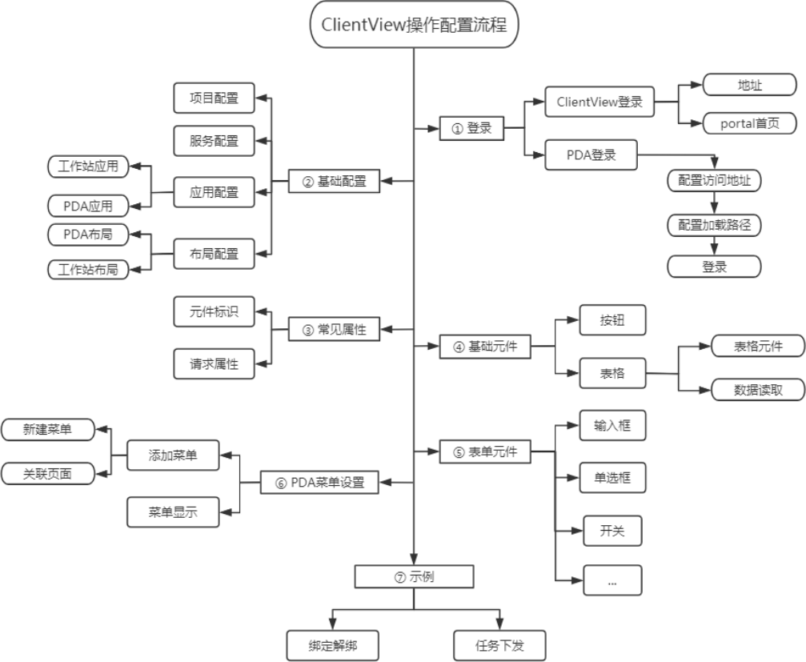
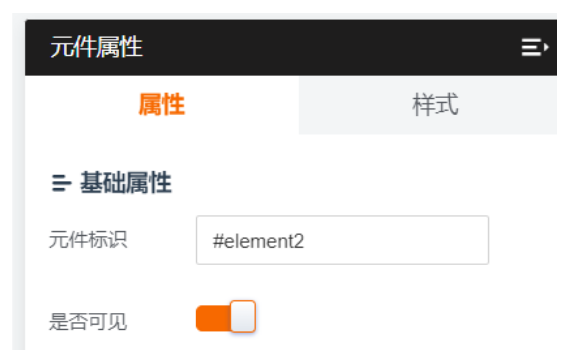
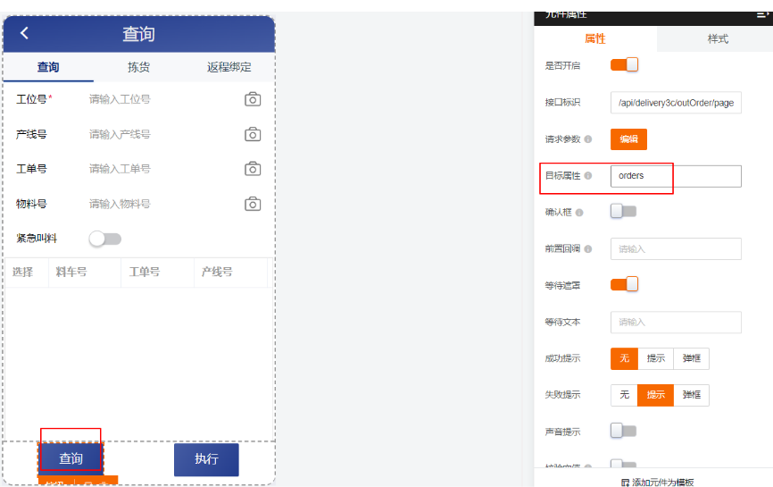
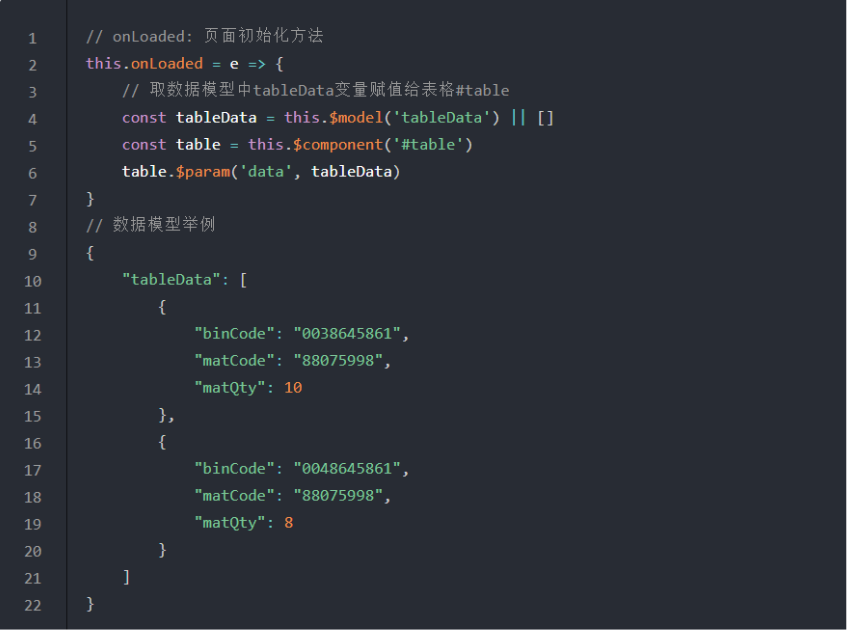
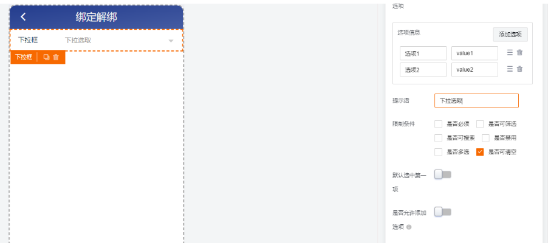

ClientView 低代码页面配置与接口绑定
面向实施人员的 ClientView 配置手册：从项目、服务、应用、布局、菜单五步搭出工作站与 PDA 页面，并用元件标识、请求属性把按钮和表格绑定到后端接口。补齐每类元件的关键参数与联调常见坑。
通信与接口目录
本篇为基于厂商操作手册的原创整理，只提炼流程与判断方法，不复制原文；不同版本与控制器存在差异，结论请结合现场验证使用。
工具定位与配置总览
ClientView 是低代码页面配置工具，用拖拽元件加接口绑定的方式为工作站或 PDA 定制操作页面，不必单独开发前端。页面既可对接仓储管理系统，也可对接调度平台，取决于应用类型的版本选择。
整体流程固定为五步，顺序不要打乱：

- 项目配置：建立项目作为资源隔离边界。
- 服务配置：登记后端服务地址与鉴权信息。
- 应用配置：决定页面跑在工作站还是 PDA、对接哪类系统。
- 布局配置：排布页面与元件。
- 菜单配置：把页面挂到 PDA 菜单上。
先做一个只含查询按钮的页面，把登录、接口、返回值链路跑通，再逐类添加表格、表单和脚本。一旦白屏或接口报错，能快速判断是配置问题还是接口问题。
登录入口与 PDA 初始配置
网页端有两个入口：直接访问 https://IP/portal/login，或访问 https://IP/portal/home 后点击 ClientView 图标进入。
PDA 端首次使用需配置服务地址：协议选 https，填写服务 IP，端口 443。随后在右上角“设置”中选择配置加载路径；若弹窗未自动出现，可手动填写：
/clientview/apps/wms-pda/index.html?appId=应用编号&projectId=项目编号#/loginappId为 PDA 应用编号，projectId为项目编号，两者必须与网页端配置一致。- 两个编号中的字母 i 均为大写，写成小写会白屏或提示应用不存在。
- 初始化管理员账号为
admin，密码以交付资料为准，首次登录后按项目要求修改。 - 地址配置错误时，PDA 表现为一直停在加载页；先在浏览器里用同一路径验证，再排查 PDA 网络。
编号里的大写 i、小写 l、数字 1 在手持终端上很难分辨。复制编号时从网页端直接拷贝，不要手抄。
基础配置：项目、服务与应用
- 项目配置：系统管理下点击“添加”，输入项目名称并确认，然后在列表中选择本项目，后续配置都在该项目下进行。
- 服务配置：资源管理下的“服务配置”中点击添加，登记后端服务信息（服务名、地址、鉴权方式），保存后确认服务状态可用。
- 应用配置：应用管理下新增应用，类型选工作站或 PDA。PDA 与仓储管理系统配合时选对应系统版本或标准版；与调度平台配合时选对应平台版本或标准版。
- 应用保存后记录其应用编号（appId），供 PDA 加载路径与页面引用。
应用类型选错是最常见的“页面能打开但没有数据”：工作站页面在 PDA 上显示错位，或 PDA 页面调用了不匹配的接口版本。发现类型不符时新建一个正确类型的应用，不要在同一应用上反复改。
布局配置与页面设计
- 进入应用管理，选择对应应用后点击“添加布局”，填写布局名称。
- 进入“布局设计”：工作站为桌面端布局，按屏幕比例划分区域；PDA 为移动端布局，控件尺寸与间距要留出手持操作余量。
- 从元件库拖入按钮、表格、输入框等元件，按业务顺序摆放，保存布局。
- 一个应用可以有多个布局：例如“查询页”“绑定页”“异常处理页”，分别放置不同元件。
- 布局保存后在网页端预览，再到 PDA 验证；两端缓存不同，改完必须分别刷新。
按钮的栅格宽度、偏移决定实际尺寸与位置。先按屏幕宽度规划一行放几个元件，再逐个设置，能避免后期为了对齐反复调整。
元件标识规则
标识是元件的唯一 ID，也是按钮发起接口调用时取值的依据。
- 标识必须以
#开头并跟英文字母，#后不能直接接数字。 - 同一页面内标识不能重复；不同页面之间可以相同。
- 另有“是否显示”开关，用于控制元件是否呈现，不影响其标识与取值。
- 标识一旦被请求参数或脚本引用，改名会导致取不到值，调整前先全局搜索引用。

#element2）：以 # 加字母开头，同页面唯一，后续请求参数直接用它取值。请求属性与接口绑定
请求属性决定元件被点击后调用哪个接口、怎么传参、结果放到哪里。
| 配置项 | 作用 | 写法与注意 |
|---|---|---|
| 是否开启 | 总开关 | 开启后才展开接口配置 |
| 接口标识 | 指定调用的接口 | get 写 get:/接口路径；post 写 post:/接口路径，省略前缀默认按 post；也可写服务名加方法名 |
| 请求参数 | 组装入参 | 值填元件标识即取该元件的值；固定值直接填且不加引号；有层级时用模板，模板内用 this.字段名 引用 |
| 目标属性 | 接收返回值 | 填变量名，接口返回的 res.data.data 会赋给该变量 |
| 确认框 | 请求前拦截 | 点击确认才真正调用，适合绑定、解绑、取消等操作 |
| 成功/失败提示 | 结果反馈 | 成功可弹提示或文本；失败取接口返回的 message。输入框一般选“无”，按钮选“提示” |
| 重置列表 | 清空指定元件 | 请求成功后清空；表格、上下条切换等绑定返回值的元件还需配合“更新配置规则”清变量 |
| 更新配置规则 | 控制更新范围 | * 作用于全部目标字段；标识@index 只作用于当前项 |

请求参数里填固定值时直接写值；加了引号会连同引号一起提交，后端收到的内容与预期不一致。只有模板语法里才需要引号。
按钮与表格元件
按钮：设置显示文本、尺寸（默认/大/小）、类型（决定颜色）、是否禁用、栅格宽度、栅格偏移，以及请求属性。栅格宽度越大按钮越宽，栅格偏移控制与左侧的距离。
表格的列需要逐列配置：
| 列属性 | 说明 |
|---|---|
| 显示名称 | 表头文字 |
| 字段 | 绑定数组类型变量，与该变量元素的属性名对应后自动填充 |
| 类型 | “选中”（支持勾选，一般放第一列）、“操作”（自定义图标与功能）、“索引”（行序号） |
| 列宽 / 顺序 / 显示 | 控制宽度、排列顺序与是否展示 |
| 排序 / 编辑 | 是否允许前端排序、是否可编辑 |
表格整体还可设置高度、选中项限制（-1 为不限制）、是否显示列间竖线。选中项限制为 1 时，可实现“只能选一行再操作”的业务。
表格读写与数组传参
表格读写是配置量最大的一类页面，核心是按钮与表格共用同一个变量。
- 按钮开启请求属性，设置接口标识与目标属性变量名。
- 表格的参数绑定使用同一个变量名，列字段与返回数据的属性对应。
- 在按钮的请求参数中，值填表格标识，参数类型选数组。
- 用模板从选中行取值，没有选中时返回空串：
this.table.length > 0 ? this.table[0].字段 : ''- 字段名必须与表格列绑定的属性一致，大小写不同取不到值。
- 需要一次提交多行时去掉
[0]，直接传this.table。 - “重置列表”与“更新配置规则”要配合使用，否则查询后旧数据仍留在表格或变量里。

tableData 为数组，列字段与数组元素属性一一对应，数组为空时表格不渲染行。表单元件与选择器
输入框：默认值可绑定上下文变量（如工位号）；类型支持文本、整数、数值；可限制最大长度、开启扫码、设置回车后切换到的下一个元件、提示语、是否必须、是否只读、是否禁用，并支持正则校验。开启“是否必须”后，该值被用于请求参数时会阻止本次请求。
选择器：可绑定接口返回值，配置选项信息、提示语、是否必填、选项名与选项值对应的字段、选项标题和禁用状态。
- 开关：支持 change 事件绑定，值变化时触发脚本。
- 单选框 / 复选框：选项配置方式与选择器一致。
- 日历：类型支持默认、多选、区间选择。
- 步进器：设置步长、最小值、最大值。

PDA 扫码枪本质是键盘输入。输入框开启扫码并让回车切换到下一个元件，可实现“扫工位 → 扫物料 → 自动聚焦按钮”，减少操作员点击次数。
PDA 菜单设置
- 进入 PDA 应用的菜单配置，点击“新建菜单”。
- 填写菜单名称，关联已经配置好的页面。
- 设置菜单图标与顺序，保存后在 PDA 登录验证。
- 不需要展示的菜单直接关闭“显示”，不必删除；保留配置便于后续启用。
PDA 登录后看不到菜单，依次检查：菜单是否关联了页面、页面是否属于当前应用、应用类型是否为 PDA、PDA 加载路径中的 appId/projectId 是否正确。
脚本示例与联调避坑
较复杂的页面会用到脚本。常见写法是在组件方法中组装参数，调用接口后用提示方法反馈结果：
this.onSubmit = () => {
const params = { 字段: this.form['#输入框标识'] };
this.$api('接口名', params).then((res) => {
if (res.data.success) {
this.$tip('提交成功', 'success');
} else {
this.$log(res.data.message);
this.$tip('提交失败', 'error');
}
});
};- 脚本中通过
this.form['#标识']读取表单元件值，用this.$tip弹提示，用this.$log记录失败信息。 appId与projectId中的字母 i 必须大写，否则加载路径无法解析。- 同一页面内标识重复会导致取值错乱，改动前先全局检查一遍。
- 请求参数中的固定值不要加引号，否则会连同引号一起提交。
- 修改配置后既要在网页端验证，也要在 PDA 上验证，两端加载路径和缓存不同。
- 页面白屏先看浏览器控制台与网络请求，再查应用类型和加载路径，不要直接重建应用。
① 空数据、单行、多行三种表格状态；② 必填项为空时请求被拦截；③ 接口失败时提示文案正确；④ 网页端与 PDA 端均能正常加载并完成一次完整业务闭环。
上线前核对
- 项目、服务、应用、布局、菜单五步配置齐全且顺序正确
- 应用类型与后端匹配（工作站或对应版本的 PDA 应用）
- PDA 访问地址使用 https、端口 443，加载路径 appId/projectId 正确且字母 i 为大写
- 元件标识以 # 开头后接英文字母，同页面内不重复
- 接口标识方法前缀正确（get:/ 或 post:/），固定参数未加引号
- 复杂参数已用模板并在参数列表中声明取值，模板内用 this.字段名 引用
- 表格参数绑定变量与按钮目标属性同名，传参类型为数组
- 表格读写模板已处理未选中行的情况，字段名与列绑定一致
- 输入框必填、正则、只读等校验已配置并能阻止无效请求
- PDA 菜单已关联页面并在终端登录验证可见
- 网页端与 PDA 端分别验证页面加载、接口返回与完整业务闭环
- 默认账号已按项目要求修改密码，敏感配置未写入公开文档